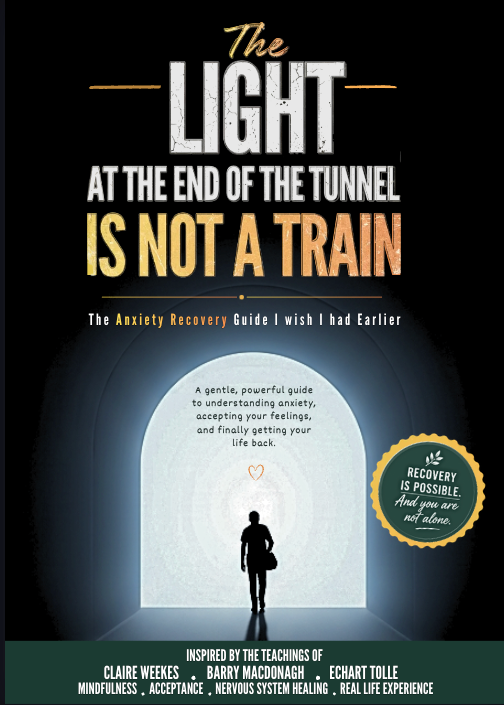

Recovery Stories
What Finally Helped Me Recover From Panic Attacks
I truly believed I would never get better. But here is the shift in perspective and the daily practices that finally got me my life back.
Read ArticleReal-world insights and practical tools from someone who recovered from panic attacks and got his life back.
Natural Approach
For years, panic attacks controlled my life. I was caught in a constant state of fear, scanning my body for racing heartbeats or dizziness, and dreading when the next wave of panic would strike.
I felt trapped and hopeless. I avoided simple things like supermarkets, driving, and social situations because I was terrified of losing control in public. My world became smaller and smaller, and I believed I would never get better.
The turning point came when I stopped fighting the anxiety. I realized that fighting the adrenaline only created more fear, keeping me trapped in a loop. I learned to stop begging the feelings to go away and instead practice allowing them to run their course.
Slowly, this change in relationship taught my brain that I was not actually in danger. The physical sensations of panic began to lose their power over me. Step by step, I went back to the places I had been avoiding, teaching my nervous system that I was safe.
Today, I have regained my confidence and freedom. Anxiety is still a normal human emotion that shows up occasionally, but it no longer controls my life. I share these real-world insights to help you find hope and guide you on your own recovery journey.
Read actionable guidance and real-life success stories to help guide your panic disorder recovery.
I truly believed I would never get better. But here is the shift in perspective and the daily practices that finally got me my life back.
Read Article
A practical guide for panic attack recovery. This handbook skips the clinical jargon and gives you the exact tools and mindset shifts that made my recovery possible.
Overcoming panic disorder naturally is a path of understanding, acceptance, and gentle courage.
Panic attacks are not dangerous. They are simply an adrenaline surge. Your body is working exactly as it should—it is just reacting to a false alarm.
Fighting anxiety feeds it more adrenaline. By shifting to allowing and accepting the physical sensations, you cut off the fuel supply.
Having panic attacks does not mean you are weak or damaged. Your nervous system is simply highly sensitized. Sensitization is fully reversible.
You don't need to wait for anxiety to completely vanish to start living again. Living your life while carrying the feelings is how true freedom is earned.